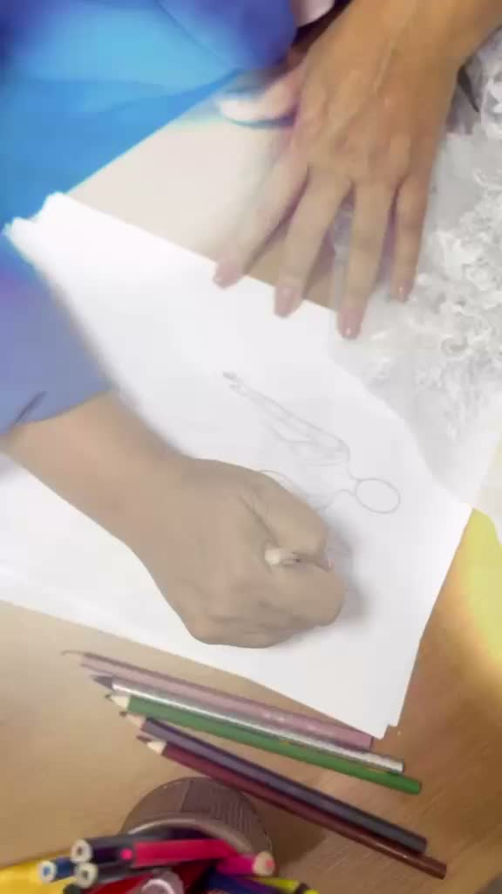
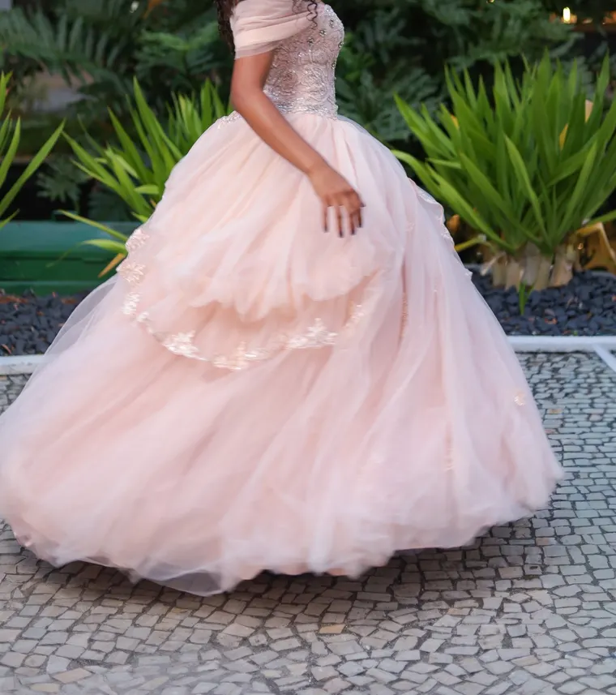
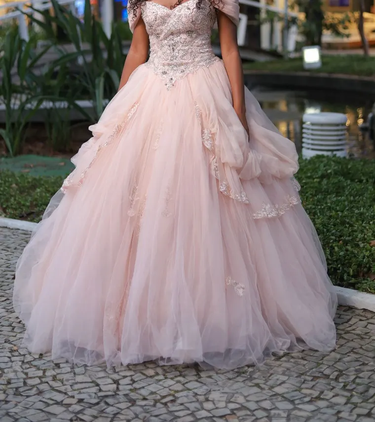

São Francisco, Niterói
Av. Presidente Roosevelt, 37, São Francisco, Niterói/RJ.
Segunda a sexta, das 9h às 18h; sábado, das 9h às 14h.
Aluguel de vestido de debutante em Niterói e na Barra da Tijuca
Entrada, valsa e dança: os três vestidos dos 15 anos.
Fechando os três vestidos, 25% de desconto em cada umFechando os três, 25% em cada um

A estilista da casa
Ela escuta a debutante e desenha o croqui no ateliê da casa.
A Jussara atende pessoalmente, conforme a agenda dela.
Debutantes reais


Ainda estou um pouco anestesiada com todo esse momento mágico que é ver a filha debutar.
Fotos de cliente real, sem rosto, por ser menor de idade.
Condições
Para alugar ou comprar. A consultora confirma os valores na prova.
25% de desconto em cada um.
Ajuste e provas incluídos.
10x sem juros, PIX ou parcelamento próprio.
Consultoria e ateliê
Sim. Debutante prova com hora marcada, nas duas lojas.
Fechando os três vestidos, 25% de desconto em cada um.
Ajuste no ateliê e provas.
Os dois. A consultora confirma os valores na prova.
10x sem juros, PIX ou parcelamento próprio da loja.
Av. Presidente Roosevelt, 37, São Francisco, Niterói/RJ.
Segunda a sexta, das 9h às 18h; sábado, das 9h às 14h.
Shopping Downtown, Av. das Américas, 500, Bloco 8, Loja 130 (loja interna do bloco).
Segunda a sábado, das 9h às 19h.
Madrinha, convidada, formanda e terno: venha sem agendar, no horário da loja. Ver lojas e horários